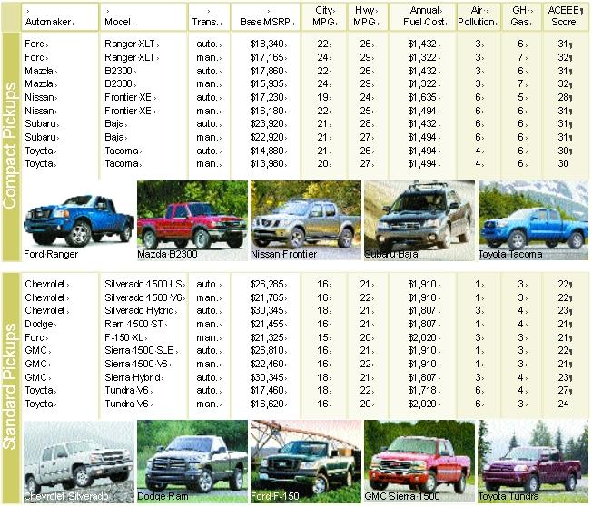

Pay Less At The Pump: The Hybrid Revolution
Cool, capable and fun to drive, hybrids also can save you thousands of dollars in gas.
By John Rockhold
October/November 2005
Six years after the release of the Honda Insight - the bulletlike two-seater that was the first gasoline/electric hybrid vehicle available in the United States - high fuel economy without compromise is here to stay. Praised by motorheads and environmentalists alike, hybrids represent the most exciting advancement in personal transportation since, well, the internal-combustion engine. Spearheaded by the Toyota Prius, hybrids’ popularity surge shows that a rapidly growing number of people want to be on the cusp of the hybrid revolution. Furthermore, with skyrocketing gas prices and dwindling global oil supplies, hybrids are becoming an increasingly wise investment.
In 2004, more than 83,000 hybrids were sold. In just the first half of this year, more than 90,000 were sold; final 2005 sales may eclipse 200,000. Right now, hybrids account for less than 1 percent of the automobiles sold in the United States. But given their growth rate and the dozens of new models that will be available in the next several years - Toyota alone plans to introduce 10 more hybrid models within the next seven years - hybrids will soon have a significant share of the auto market. Already there are more hybrids in more size categories than most thought possible when the Insight arrived. Meanwhile, sales of large sport utility vehicles and trucks are dwindling.
Car-buyers also are willing to pay extra for hybrids - anywhere from $1,000 to $10,000 more than conventional vehicles. But with tax incentives for hybrids and the rising cost of gas, it’s possible to make up the low end of that hybrid premium in about five years. For example, compare a conventional vehicle with the average U.S. fuel economy of 21 miles per gallon to a 46-mpg hybrid (the average of the Accord, Civic, Escape, Insight and Prius hybrids). Assume you pay $2.20 a gallon for gasoline, with that price rising 10 cents annually (a modest estimate; inflation alone will increase prices by at least 5 cents a year). After five years, you’ll save $4,658 with a hybrid; after 10 years, $10,287. (See "Hybrid Payback," below, for more examples.)
Still, the hybrid premium can be intimidating at first glance. In a survey conducted by the Polk Center for Automotive Studies, 61 percent of those polled said the extra cost would be a deterrent to buying a hybrid. But if we’re willing to pay hundreds or thousands extra for options such as larger engines, four-wheel drive or leather seats, why not invest in a technology that will actually pay dividends for years to come?
“There are a lot of features that aren’t worth the extra cost, but people pay for them because they want those features,” says Terry Penney, technology manager for advanced vehicle technologies at the National Renewable Energy Laboratory (NREL). Penney and his team have worked to develop and improve hybrid systems since the early 1990s. “You have to take the longer view, the real cost of gas and the environmental consequences of pollution. People have recently seen how gas prices can be volatile. Oil is now about $60 a barrel - where’s it going to stop?”
At the heart of every hybrid is the tandem of an internal-combustion engine (powered by gasoline) and an electric motor (powered by batteries). In conventional vehicles, automakers size gas engines to provide enough power for peak acceleration, but that level of power isn’t needed most of the time. The addition of an electric motor allows for a smaller gas engine that uses less fuel and can run more often at its peak efficiency.
In most hybrids, when the vehicle idles, the gas engine shuts off and the electric motor is the sole source of power. The electric motor also powers the hybrid at low speeds and supplements the gas engine with extra oomph when the driver accelerates quickly.
To recharge their batteries, hybrids capture kinetic energy as the vehicle slows down, a process called regenerative braking. In conventional vehicles, this energy is lost as heat when brakes apply friction. But in hybrids, the electric motor helps slow the car and transfers some of the kinetic energy to the batteries, which store the power for future use. Hybrids’ conventional brakes kick in when needed, such as with sudden stops. Because hybrids recharge themselves, there’s no need to plug them into an electrical outlet overnight. (But plug-in hybrids are on the horizon - see The Prius You Can Plug In, below.)
TYPES OF HYBRIDS
The 10 hybrid models available today utilize these characteristics in different ways and to varying degrees. There are gray areas among the different types, but the foremost distinction is whether or not the electric motor can operate independently from the gasoline engine. In full hybrids, the gasoline engine remains off for short periods at low speeds and the electric motor alone powers the vehicle. The net effect significantly boosts city fuel economy, and while moving in electric-only mode, these hybrids release almost zero tailpipe emissions. Full hybrids available today are those from Ford - the Escape Hybrid and the Mercury Mariner Hybrid - and those from Toyota - the Prius, Highlander Hybrid and Lexus RX 400h.
Mild hybrids have all the hybrid features except electric-only drive. The gasoline engine kicks on once the vehicle begins to move and continues running until the driver turns off the ignition. The electric motor lightens the gas engine’s load and boosts power when needed. Two of Honda’s hybrids - the Insight and Civic Hybrid - are in this category. The 2006 Civic Hybrid, though, will be a full hybrid - it will include electric-only drive at low speeds.
Some hybrids do not have smaller gasoline engines in conjunction with their electric motors. These muscle hybrids deliver improved horsepower and acceleration, with slightly improved fuel economy. They also have idle-off and regenerative braking. The main example is the Honda Accord Hybrid, which has a six-cylinder engine and delivers up to 255 horsepower with fuel economy estimates of 29 mpg in city driving and 37 mpg in highway driving. The nonhybrid Accord with a six-cylinder engine has 15 less horsepower and achieves about 21/30 mpg. Some consider the Highlander Hybrid and RX 400h muscle hybrids because of their six-cylinder engines.
Described by some as hollow hybrids, the Chevrolet Silverado Hybrid and GMC Sierra Hybrid have the most limited hybrid characteristics. These trucks do not have electric-only drive, but they do have idle-off and regenerative braking. However, their regenerative braking only recharges the batteries - the batteries do not store extra kinetic energy for use with hard acceleration. The batteries do help power on-board accessories, such as air conditioning, and plug-in devices, such as electric tools. These trucks have a net fuel economy increase of about 10 percent over their conventional counterparts.
BUYING AND OWNING A HYBRID
A year ago, long waiting lists greeted those who wanted to buy just about any hybrid model. Some shoppers remained in limbo for six months or more. Demand was intense and supply was limited - looking for a hybrid became a year-round version of shopping for the hottest, hard-to-find toy of the Christmas season. Production of hybrids, though, is constantly increasing in an effort to keep up with demand. Although unsold hybrids are rare on dealers’ lots - most are spoken for before they arrive - wait time is usually just a few weeks.
High demand also has driven up the price of hybrids. Odds are you won’t successfully haggle dealers for a bargain - in high-demand areas, hybrids frequently sell for several thousand dollars more than their retail prices. Some used hybrids, especially recent years of the Prius, sell for as much or more as they cost when brand-new. That’s at least a good sign for resale value - most new cars sharply decline in value as soon as they leave dealers’ lots. To get the best deal on a hybrid, be patient and search high and low. Arm yourself with knowledge so you don’t get gouged; several Web sites list prices recently paid for automobiles. Two examples are HybridCars.com and Kelley Blue Book. Also read about others’ hybrid-buying experiences in the numerous Internet blogs and forums devoted to hybrids.
If you buy a hybrid before 2006, you can take a $2,000 deduction on your federal income taxes. Basically, this deduction will reduce your federal taxable income by $2,000. For hybrids bought after Jan. 1, 2006, the recently enacted energy bill set up tax credits - ranging from $250 to $3,400, depending on the vehicle’s fuel economy. The credit would go toward your tax liability, the amount you owe before any withholdings.
Over the long term, the credit will be more advantageous to those who buy newer hybrid models and less helpful to those who buy better-selling hybrids such as the Prius. The energy bill established a complex formula to reduce the credits once an automaker sells more than 60,000 hybrids after Jan. 1. Hybrid buyers in 14 states also can take advantage of state-level incentives, including tax credits and exemptions from sales tax. Hybrid buyers in Colorado, for example, are eligible for tax credits of more than $4,500. There also are nonfinancial incentives - such as being allowed to drive in lanes for high-occupancy vehicles and park without paying meter fees. Visit www.hybridcars.com to see if there are programs where you live.
Owning a hybrid should be a worry-free experience - don’t believe naysayers who claim they come loaded with extra maintenance costs. Their regular maintenance needs are no different than gasoline-only vehicles, and the Honda Civic Hybrid and Toyota Prius have earned the highest ratings for reliability and owner satisfaction from Consumer Reports. In a now-famous quote within the hybrid community, Toyota mechanic Gus Heredia told the Los Angeles Times, “I’d go broke if the Prius was all I worked on.”
Hybrids also are backed by the same warranties you’d expect with any new automobile. Additional warranties cover the hybrid systems and typically last for eight years or 100,000 miles. The hybrid components do not require any routine maintenance, and the batteries will work for about 200,000 miles or more. When they do expire, they can be recycled.
Tune-ups and routine service for hybrids probably should be handled by a dealer-based mechanic - unless you know and trust an independent mechanic with hybrid experience. Dealers’ higher rates probably are worth paying to keep your hybrid in knowledgeable hands. Expect, though, to save some money on brake maintenance - regenerative braking reduces the use of mechanical brakes, extending their life.
In terms of safety, hybrids pose no more danger in a collision than any conventional vehicle. In fact, many hybrids offer the best in newer safety technologies, such as stability control, anti-lock brakes and side air bags. Here’s more good news: given those safety features, you may even save money on insurance for a hybrid, especially if you’re upgrading from an older vehicle and have a good driving record.
DRIVING A HYBRID
Initially, some hybrid owners find that their actual gas mileage doesn’t live up to what’s advertised. For many, the effort to improve their fuel economy becomes a diligent pursuit. Once drivers understand how hybrids work, they can adjust their driving habits to improve their mileage - for example, learning just when to press and release the accelerator to maximize coasting on the electric motor helps improve miles per gallon.
Consider, though, that the advertised fuel economy numbers may be slightly exaggerated. The Environmental Protection Agency (EPA) uses a 30-year-old methodology for calculating fuel economy. The tests do not account for modern influences on gas mileage such as air conditioning and speeds greater than 60 mph. The final numbers can be inflated by as much as 10 percent. (See Green Means Go.)
Properly driven hybrids, though, will match their EPA-rated fuel economy more closely than nonhybrids, according to Amory Lovins, senior author of Winning the Oil Endgame and chief executive officer of Rocky Mountain Institute, an independent, nonprofit think tank devoted to energy and resource efficiency.
Lovins recommends “pulse” driving: “When you see that you’ll need to slow or stop, start braking gently and as early as possible so you can recover the most braking energy for later use. If you brake too late - hence too hard - the mechanical brakes will override, and they simply turn motion into useless heat.”
Hybrids also are a justified excuse to accelerate with vigor. “Contrary to what we were taught in high-school driver’s education, when you’re accelerating up to cruising speed, do so briskly,” says Lovins, who owns a Honda Insight that gets 63 mpg. “The engine is most efficient at high speed and torque, so you’ll use less fuel accelerating aggressively for a short time than accelerating slowly for a long time.”
Also, take advantage of hybrids’ computerized monitors that show which components are delivering power and report your fuel economy. “Consistent with attentive driving, keep an eye on the real-time mpg display and use the feedback to improve your driving habits,” Lovins says.
Exactly how much your fuel economy will improve by driving a hybrid depends on numerous personal factors, but compared to gasoline vehicles, today’s hybrids generally get 20 percent to 25 percent better fuel economy in highway driving, and 40 percent to 100 percent better mileage in city driving. Gas mileage in high-speed driving can improve if you avoid short trips and take a road with at least some hilly sections - the electric motor will kick in with steep inclines, aiding the gas engine’s efficiency. For example, Penney - who drives a Prius - gets better results when he’s on highways in Colorado’s mountains than when driving through the city of Golden to reach the NREL office.
But stop-and-go driving does have the statistical edge. “It’s generally true that stop-and-go driving is better [for hybrids’ fuel economy] because you get regenerative braking, and that’s always better than no regenerative braking,” Penney says. “So if a hybrid is better for someone, it’s for someone who does a lot of starting and stopping.”
Translation: everyone. The bottom line is that driving a hybrid can be empowering - a personal, patriotic and environmental rush. The next time you spend $20 to $30 at the gas station, imagine not returning for another 500 miles.

HYBRID INVASION!
Available Now:
Chevrolet Silverado (truck)
GMC Sierra (truck)
Honda Accord (midsize)
Honda Civic (compact)
Honda Insight (two-seater)
Ford Escape (SUV)
Lexus RX 400h (SUV)
Lexus GS 450h (midsize)
Mazda Tribute (SUV)
Mercury Mariner (SUV)
Nissan Altima (midsize)
Saturn VUE (SUV)
Toyota Camry (midsize)
Toyota Prius (midsize)
Toyota Highlander (SUV)
Down the Road:
Chevrolet Equinox (SUV)
Chevrolet Malibu (midsize)
Chevrolet Tahoe (SUV)
Dodge Ram (truck)
Ford Fusion (midsize)
GMC Yukon (SUV)
Mercury Milan (midsize)
Porsche Cayenne (SUV)
Toyota Sienna (minivan)
THE PRIUS YOU CAN PLUG IN
By Scott Hollis
A modified hybrid Toyota Prius sedan averaged 102 miles per gallon during the 2005 Tour de Sol advanced car rally held in New York state. The Prius used less than $1 in electricity and only $4 in gasoline to sustain it during the 150-mile race! The prototype Prius (called a plug-in hybrid) was a message to automakers and consumers that the technology to take hybrids one step further is here.
WHAT'S A PLUG-IN?
This modified Toyota hybrid, developed by Energy CS of Monrovia, Calif., operates just like any other Prius, but it can get more than 100 mpg on long trips because the 1.3-kilowatt hour (kWh) battery has been replaced with a more powerful 9-kWh Valence Technologies lithium-ion battery pack that can be recharged from a standard electrical outlet. At residential neighborhood speeds (less than 35 mph), specialized monitoring and control circuits in the Energy CS Prius automatically select electric operation - resulting in almost zero tailpipe emissions - during the first 50 to 60 miles, minimally “boosted” by the gas engine until the battery charge is depleted. After that, the Energy CS plug-in falls back to the mileage of a standard Prius.
As a result, the Energy CS Prius would stay almost exclusively in electric mode for short, local trips and use only a small fraction of the gasoline consumed by conventional cars. In low-speed city driving and 55-mph highway driving, it’s possible to average more than 200 mpg. Faster 65-mph driving, however, will result in 100 mpg or less, and 75-mph highway driving will average less than 80 mpg. For longer, mixed-driving trips up to 70 miles, the modified Prius averages between 120 and 180 mpg, depending on driving habits, hills and car speed. Because electric motors are much more efficient than gas engines, the air pollution from a plug-in is much less than that produced by an internal-combustion, gas-powered vehicle (for more information, see The Potential of Plug-ins, which is available in the October/November issue; subscribe today to receive the issue).
“They’re basically like some current hybrids, but with larger batteries and the ability to recharge conveniently so local travel is electric, yet the vehicle has unlimited range when it switches to the gas engine,” says Felix Kramer, founder of The California Cars Initiative (CalCars). “While currently available hybrids may cut gasoline use by one-third, plug-in hybrid-electric vehicles can cut out another third.”
A HESITANT AUTO INDUSTRY
So why don’t all hybrids get this kind of mileage? The whole industry - not just Toyota - took great lengths to distance itself from the plug-in idea because automakers felt Americans wouldn't cozy up to the idea of plugging in their vehicles each night, and because the cost of the higher-voltage batteries is currently prohibitive. The lithium-ion batteries found in the Energy CS Prius at the Tour de Sol, for instance, cost $15,000 alone, and they weigh 160 to 190 pounds more than the standard Prius battery pack.
“We think the plug-in concept is interesting, and Toyota will be doing its own research into it,” says Cindy Knight, a spokesperson for Toyota. “But we see a big distance between tinkering with a prototype and bringing one to market. When better breakthroughs in technology become available, we’ll be interested.” In fact, a number of environmental organizations, such as the American Council for an Energy Efficient Economy, are researching the long-term viability of plug-in hybrids.
THE PLUG-IN REVOLUTION
While major automakers claim current plug-in hybrids are too costly to successfully market, CalCars is busy trying to narrow the cost gap through incentives, subsidies and rebates from public and private sources. Kramer says eager plug-in hybrid buyers are the key piece of the puzzle to reach mass production. On the commercial side, Energy CS’s newly formed company, EDrive, has successfully demonstrated the effectiveness of the technology - proven by the company’s finish in the Tour de Sol. In 2006, EDrive intends to sell its plug-in conversion services to Prius owners for about $12,000. While the price of such a conversion is steep, the goal not only is to revolutionize the market, but also to convince large automakers such a market exists. Once EDrive can show interest and investment in its own plug-in conversion kit, related products will enter the market at increasingly competitive prices.
“Our goal is to persuade Toyota and other automakers to build plug-in hybrids for a market we expect to expand as state and international greenhouse gas initiatives are phased in,” Kramer says. “We’re exploring with public officials ways to provide incentives to automakers to build them. We’re demonstrating demand initially from early-adopter individuals and institutions.” One organization helping to promote the plug-in hybrid concept is the South Coast Air Quality Management District, which gave Energy CS $130,000 to convert four Priuses to plug-ins that will be tested in several car fleets.
MAKING PLUG-INS AFFORDABLE
The high cost of plug-ins is directly related to their increased number of batteries, and the availability of affordable advanced battery technology will be a crucial challenge to the growth of the plug-in market. But battery technology is improving rapidly, and when combined with larger scales of production and more dollars for research and development, the upfront cost of lithium-ion batteries could be reduced.
Assuming EDrive and other proponents such as CalCars can prove there’s a viable market and cost-effective blueprint for selling a plug-in hybrid, it could become an option on any hybrid car. People currently pay extra for such luxuries as automatic transmission, leather seats and more powerful engines, so it shouldn't be hard to convince car buyers to pay more for the plug-in option.
The big question is just how much money will the general public pay for this option? A 2004 study by J.D. Power & Associates suggests the answer is directly affected by the price of gas. As the cost of gas rises, so does the demand for more efficient automobiles. Experts think that a mass-produced plug-in hybrid could be built for as little as $3,000 more than that of a regular hybrid model. If this is true, fuel savings could offset the upfront cost of a plug-in hybrid quickly - especially if incentives and subsidies are available.
|
MATTHEW T. STALLBAUMER Author John Rockhold test drives a Toyota Prius in Topeka, Kan. |
TOYOTA MOTOR SALES The tandem of a gasoline engine and electric motor powers every hybrid. |
COURTESY HONDA The Honda Civic Hybrid |
 COURTESY HONDA The Honda Accord Hybrid |
 COURTESY LEXUS Lexus RX 400h |
 MATTHEW T. STALLBAUMER Ford Escape Hybrid |
|
COURTESY MERCURY Mercury Mariner Hybrid |
COURTESY TOYOTA Toyota Highlander Hybrid |
PHOTOS COURTESY THEIR RESPECTIVE AUTOMAKERS |
|
PHOTOS COURTESY THEIR RESPECTIVE AUTOMAKERS |
PHOTOS COURTESY THEIR RESPECTIVE AUTOMAKERS |
PHOTOS COURTESY THEIR RESPECTIVE AUTOMAKERS |
 PHOTOS COURTESY THEIR RESPECTIVE AUTOMAKERS |
 PHOTOS COURTESY THEIR RESPECTIVE AUTOMAKERS |
PHOTOS COURTESY THEIR RESPECTIVE AUTOMAKERS |
|
 |
|
|